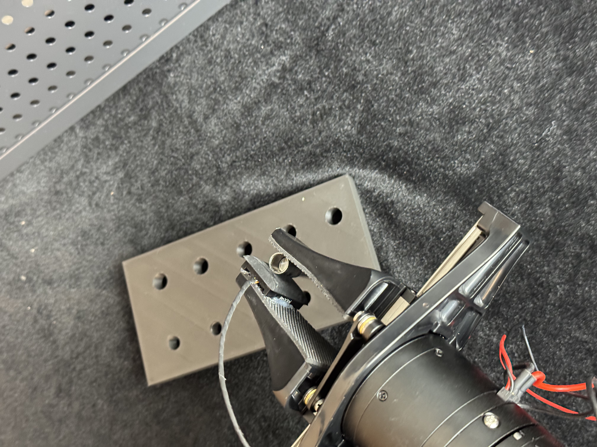
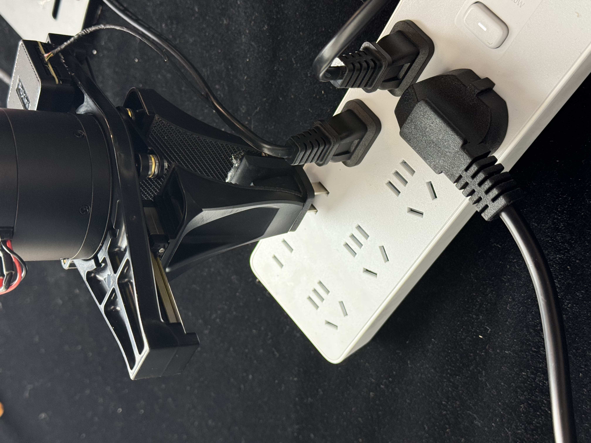
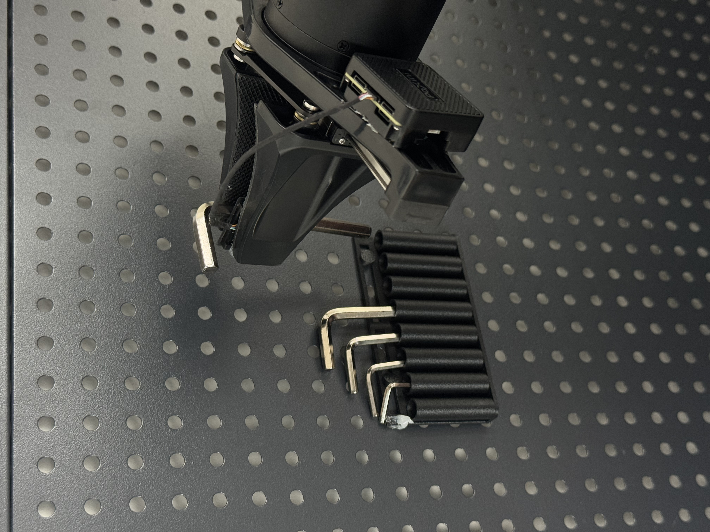
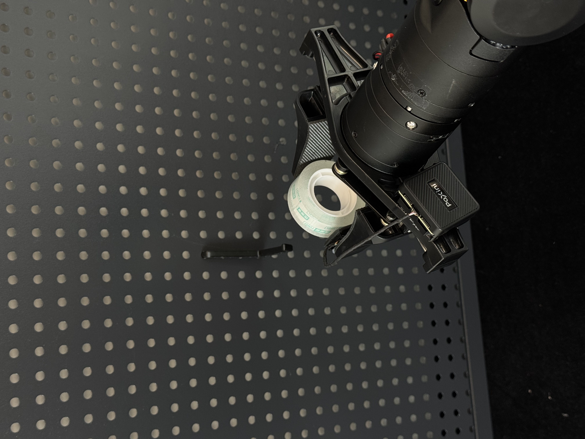
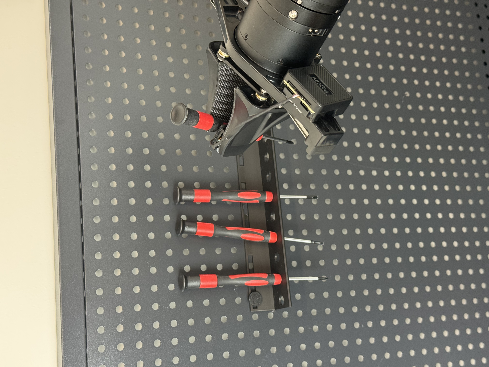
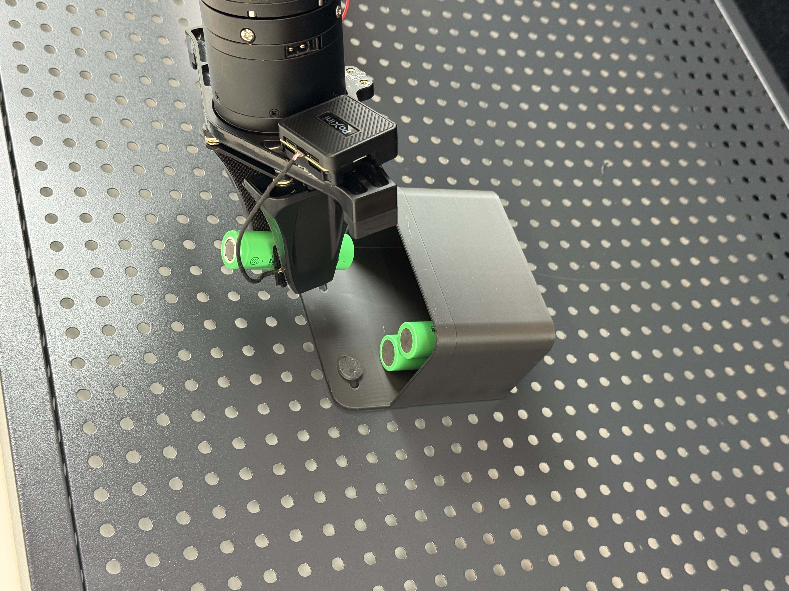
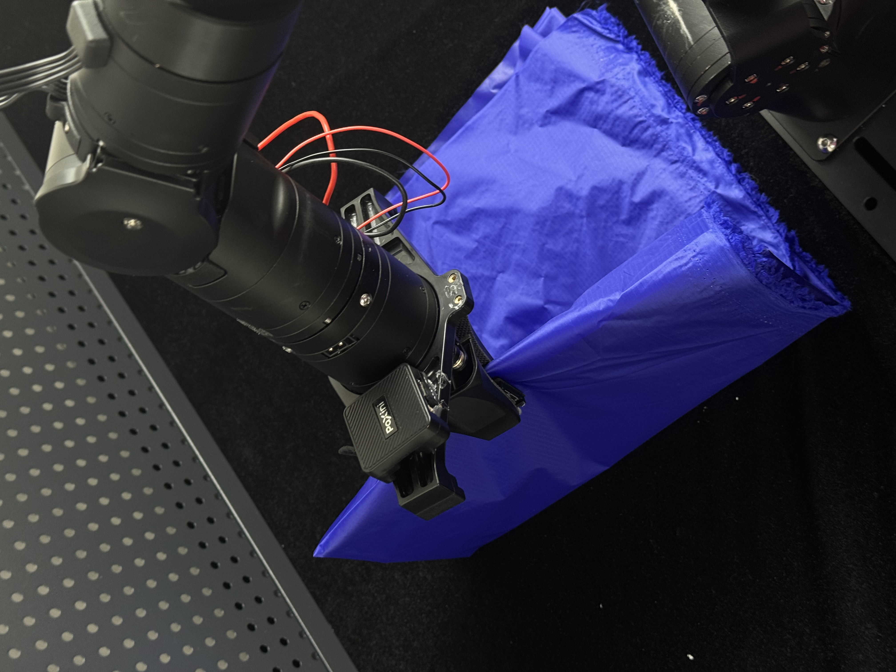
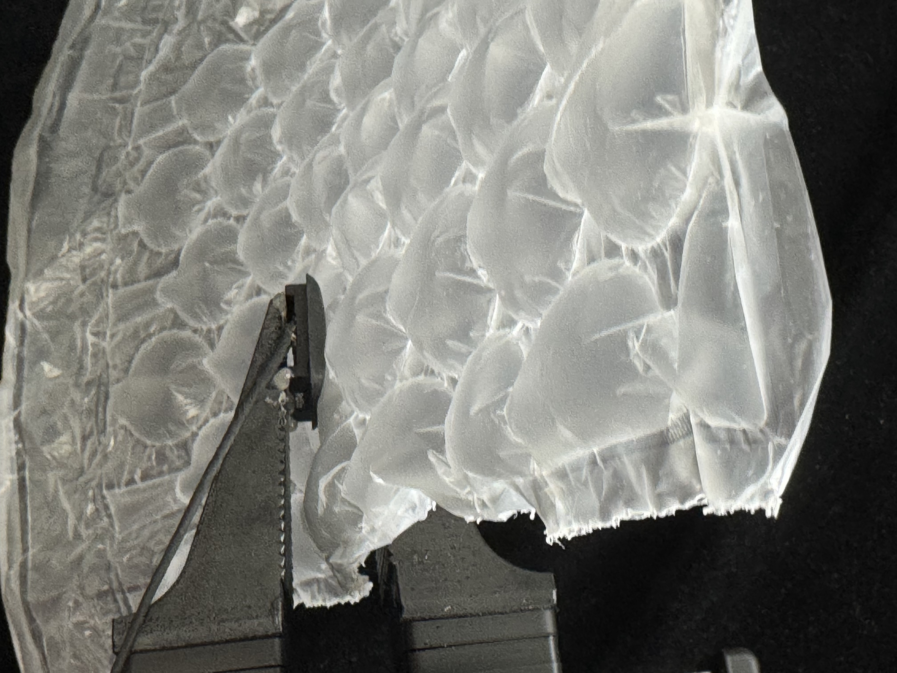

Slip the sleeve onto the shaft
A shaft-hole assembly task involving precise alignment, local contact, and motion-state recording.
Open dataset →
A dataset portal for contact-rich industrial manipulation scenarios with synchronized visual, tactile, and robot motion-state recordings.
T²-Grasp contains industrial manipulation scenarios organized by contact-rich task families rather than only object categories.
The gallery is organized into three task families. Click each scenario card to open the corresponding dataset page or download link.
Tasks requiring accurate alignment, tight-tolerance insertion, and contact-aware final-stage correction.

A shaft-hole assembly task involving precise alignment, local contact, and motion-state recording.
Open dataset →
A connector insertion task where contact cues are critical for detecting partial engagement and misalignment.
Open dataset →
A tight-tolerance insertion task with subtle contact transitions and visually ambiguous alignment states.
Open dataset →Tasks where the decisive contact state is partially hidden and policies must react to slip, unstable contact, or hidden engagement.

A multi-stage hanging task including approach, grasp, hook engagement, and release under contact constraints.
Open dataset →
An insertion scenario requiring local alignment, contact-state estimation, and robust final-stage correction.
Open dataset →
An occluded placement task where the battery compartment is partially hidden.
Open dataset →Tasks involving deformable or compliant objects, where local resistance, deformation, and unstable contact must be captured.

A compliant-material handling task that captures deformation, unstable contact, and tactile-temporal dynamics.
Open dataset →
A deformable object manipulation task requiring the robot to flip a foam sheet while maintaining stable contact and minimizing slippage under strong deformation.
Open dataset →
Route a flexible cable through predefined waypoints while adapting to deformation and contact constraints.
Open dataset →Dataset statistics by task family, representative tasks, objects, and trajectory counts.
| Task Family | Representative Tasks | Tasks / Objects | Traj. | Nominal / Recovery / Failure |
|---|---|---|---|---|
| Precision assembly | precision fastening; shaft-hole assembly; power-strip plug insertion | 12 / 34 | 1500 | 900 / 450 / 150 |
| Occluded slip-sensitive manipulation | blind-zone contact search; hidden plug operation; dynamic slip compensation | 8 / 24 | 1000 | 580 / 320 / 100 |
| Compliant material handling | flexible packaging; cable routing; bubble-wrap placement; soft material manipulation | 10 / 28 | 1100 | 660 / 330 / 110 |
| Total | — | 30 / 86 | 3600 | 2140 / 1100 / 360 |